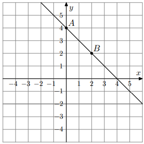

Funkcja \(y=f(x)\) jest określona za pomocą tabeli:
x
−2
−1
0
1
2
y
−1
0
1
0
3
Oceń prawdziwość poniższych stwierdzeń. Wybierz P, jeśli stwierdzenie jest prawdziwe, albo F – jeśli jest fałszywe.
1. Funkcja \(f\) ma dokładnie jedno miejsce zerowe.
2. W kartezjańskim układzie współrzędnych wykres funkcji \(f\) jest symetryczny względem osi \(Oy\).
1) Miejsca zerowe to \(x\) dla których \(y=0\). Z tabeli wartości \(y=0\) dla \(x=-1\) i \(x=1\) — są więc **dwa** miejsca zerowe. Stwierdzenie 1 jest fałszywe. (F)
2) Symetria względem osi \(Oy\) oznacza, że dla każdego \(x\) powinno być \(f(-x)=f(x)\). Sprawdzamy: \(f(-2)=-1\) a \(f(2)=3\) — różne, zatem wykres nie jest symetryczny względem \(Oy\). Stwierdzenie 2 jest fałszywe. (F)
Zad. 2
(czerwiec 2024 - zad. 23.2)
Okrąg \(O\) o równaniu \((x-1)^2+(y+2)^2=5\). Okrąg \(K\) jest obrazem \(O\) w symetrii środkowej względem początku układu współrzędnych. Równanie okręgu \(K\) jest:
Symetria środkowa względem początku (0,0) wysyła punkt \((x,y)\) na \((-x,-y)\). Środek okręgu \(O\) to \(S=(1,-2)\). Obrazem środka w symetrii środkowej będzie \((-1,2)\). Zatem równanie okręgu \(K\) to \((x+1)^2+(y-2)^2=5\). Odp.: D.
Zad. 3
(sierpień 2022 - zad. 24)
Obrazem prostej \(y=2x+5\) w symetrii osiowej względem osi \(Ox\) jest prosta o równaniu:
Symetria względem osi \(Ox\) zmienia znak współrzędnej \(y\): \((x,y)\mapsto(x,-y)\). Prosta \(y=2x+5\) po odbiciu daje równanie \(-y=2x+5\) czyli \(y=-2x-5\). Odp.: B.
Zad. 4
(czerwiec 2021 - zad. 24)
Obrazem prostej \(x-2y+3=0\) w symetrii osiowej względem osi \(Oy\) jest prosta o równaniu:
Symetria względem osi \(Oy\) zamienia \(x\) na \(-x\). Podstawiamy: \((-x)-2y+3=0\) → \(-x-2y+3=0\). Możemy pomnożyć przez \(-1\): \(x+2y-3=0\). Odp.: C.
Zad. 5
(maj 2020 - zad. 20)
Punkt \(B\) jest obrazem punktu \(A=(-3,5)\) w symetrii względem początku układu współrzędnych. Długość odcinka \(AB\) jest równa:
Obraz punktu \(A=(-3,5)\) w symetrii względem początku to \(B=(3,-5)\). Długość odcinka \(AB\):
\[
|AB|=\sqrt{(3-(-3))^2+(-5-5)^2}=\sqrt{6^2+(-10)^2}=\sqrt{36+100}=\sqrt{136}=2\sqrt{34}.
\]
Odp.: A.
Zad. 6
(sierpień 2019 - zad. 19)
Punkt \(P=(-6,-8)\) przekształcono najpierw w symetrii względem osi \(Ox\), a potem względem osi \(Oy\). Otrzymano punkt \(Q\). Zatem:
Symetria względem osi \(Ox\) zamienia \((x,y)\mapsto(x,-y)\): \(P\mapsto(-6,8)\). Następnie symetria względem osi \(Oy\) zamienia \((x,y)\mapsto(-x,y)\): \((-6,8)\mapsto(6,8)\). Odp.: A.
Zad. 7
(maj 2019 - zad. 19)
Na rysunku fragment wykresu funkcji liniowej \(f\). Na wykresie leżą punkty \(A=(0,4)\) i \(B=(2,2)\).
Obrazem prostej \(AB\) w symetrii względem początku układu współrzędnych jest wykres funkcji \(g\) określonej wzorem:

Zad. 8
(czerwiec 2017 - zad. 19)
Punkty \(A=(-21,11)\) i \(B=(3,17)\) są końcami odcinka \(AB\). Obrazem tego odcinka w symetrii względem osi \(Ox\) jest odcinek \(A'B'\). Środkiem odcinka \(A'B'\) jest punkt o współrzędnych:
Środek odcinka \(AB\): \(\left(\frac{-21+3}{2},\frac{11+17}{2}\right)=(-9,14)\). Po odbiciu względem osi \(Ox\) zmienia się znak współrzędnej \(y\): środek \(A'B'\) ma współrzędne \((-9,-14)\). Odp.: A.
Zad. 9
(maj 2015 - zad. 20)
Dane są punkty \(M=(-2,1)\) i \(N=(-1,3)\). Punkt \(K\) jest środkiem odcinka \(MN\). Obrazem punktu \(K\) w symetrii względem początku układu współrzędnych jest punkt:
Środek \(K\) odcinka \(MN\) to:
\[
K=\left(\frac{-2+(-1)}{2},\frac{1+3}{2}\right)=\left(-\tfrac{3}{2},2\right).
\]
Obraz w symetrii środkowej względem początku: \(K'=\left(\tfrac{3}{2},-2\right)\). Odp.: D.
Zad. 10
(grudzień 2014 - zad. 2)
Okrąg o środku \(S=(-6,-8)\) i promieniu \(2014\). Obraz tego okręgu w symetrii osiowej względem osi \(Oy\) ma środek \(S_1\). Odległość między punktami \(S\) i \(S_1\) jest równa:
Symetria względem osi \(Oy\) zmienia \((x,y)\mapsto(-x,y)\). Zatem \(S=(-6,-8)\mapsto S_1=(6,-8)\). Odległość:
\[
|SS_1|=\sqrt{(6-(-6))^2+(-8-(-8))^2}=\sqrt{12^2+0} = 12.
\]
Odp.: A.
Zad. 11
(informator CKE)
Dane punkty \(A=(1,2)\) i \(B=(3,7)\). Punkty \(A_O\) i \(B_O\) są obrazami \(A\) i \(B\) w symetrii środkowej względem \(O=(0,0)\). Współczynnik kierunkowy prostej przechodzącej przez \(A_O\) i \(B_O\) jest równy:
Symetria środkowa względem początku zamienia punkt \((x,y)\) na \((-x,-y)\). Zatem \(A_O=(-1,-2)\), \(B_O=(-3,-7)\). Współczynnik kierunkowy prostej przez te punkty:
\[
m=\frac{-7-(-2)}{-3-(-1)}=\frac{-5}{-2}=\frac{5}{2}.
\]
Odp.: A.